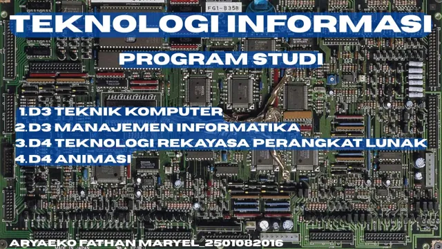

Temukan arahmu
di dunia teknologi.
Mulai dari perangkat keras, perangkat lunak, hingga karya visual. Kenali program studi Teknologi Informasi di Politeknik Negeri Padang.
Jelajahi program studiPilih ruang belajarmu.
4 program ditampilkan
D3
Teknik Komputer
Perangkat & sistem
Tertarik pada perangkat komputer dan sistem yang menghubungkannya? Kenali D3 Teknik Komputer melalui informasi program studi resmi.
Lihat Teknik Komputer
D3
Manajemen Informatika
Informasi & organisasi
Jelajahi hubungan antara pengelolaan informasi dan kebutuhan organisasi. Baca informasi D3 Manajemen Informatika langsung dari sumber resmi.
Lihat Manajemen Informatika
D4
Teknologi Rekayasa
Perangkat Lunak
Perangkat lunak
Perangkat Lunak
Ingin mengenal rekayasa perangkat lunak lebih jauh? Temukan informasi D4 Teknologi Rekayasa Perangkat Lunak di halaman program studi.
Lihat Rekayasa Perangkat Lunak
D4
Animasi
Visual & gerak
Teknologi juga menjadi medium untuk bercerita. Kenali D4 Animasi dan informasi programnya melalui situs resmi jurusan.
Lihat AnimasiTeknologi bertemu
kemungkinan.
Jurusan Teknologi Informasi memperkenalkan bidang pengelolaan informasi berbasis komputer untuk kebutuhan instansi, organisasi, dan bisnis modern.
Halaman ini membantu kamu mengenali pilihan program studi. Untuk kurikulum, persyaratan, dan informasi akademik terbaru, gunakan situs resmi jurusan sebagai rujukan utama.
Kenali jurusan di situs resmiEmpat pilihan untuk dijelajahi.
Lihat grafis proyek awal

Akreditasi
program studi.
Status berikut berasal dari konten proyek awal dan belum diverifikasi ulang. Status serta masa berlaku terkini perlu diperiksa pada sumber resmi.
Periksa informasi resmi| Program studi | Jenjang | Akreditasi |
|---|---|---|
| Teknik Komputer | D3 | Baik Sekali |
| Manajemen Informatika | D3 | Unggul |
| Teknologi Rekayasa Perangkat Lunak | D4 | Baik Sekali |
| Animasi | D4 | Baik Sekali |
Pilih dengan pertanyaan
yang tepat.
Panduan eksplorasi editorial, bukan kurikulum resmi atau tes penentuan jurusan. Gunakan pertanyaan ini saat membaca halaman program dan berdiskusi dengan pihak kampus.
-
Apa yang ingin kamu pelajari?
Catat topik yang menarik bagimu, lalu cocokkan dengan mata kuliah pada kurikulum resmi. Jangan hanya memilih dari nama program.
-
Seperti apa proses belajarnya?
Tanyakan bentuk praktikum, tugas, dan proyek akhir. Cari contoh karya yang benar-benar diterbitkan oleh program studi.
-
Apa yang perlu kamu pastikan?
Periksa persyaratan masuk, biaya, status akreditasi beserta masa berlakunya, dan kontak resmi sebelum mengambil keputusan.
Transparansi sumber: detail akademik terbaru belum dapat diverifikasi dari lingkungan pengembangan ini. Halaman resmi menampilkan verifikasi keamanan saat diperiksa pada 6 November 2026. Tautan resmi tetap tersedia; keterangan program di halaman ini bukan daftar mata kuliah.
Sisi lain dari
halaman ini.
Video visual dari proyek awal, kini opsional. Tidak diputar otomatis dan baru dimuat ketika kamu memilih untuk menontonnya.
Visual dekoratif tanpa informasi akademik. Audio dimatikan secara default.
Jika video tidak dapat diputar, unduh video asli.